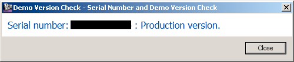

Determine Revit Demo Mode and Serial Number
Last week's updated Revit demo mode determination prompted a lively discussion between two strong Revit API experts and blog contributors, Victor Chekalin and Rudolf Honke the Revitalizer, partly on how to further improve the demo mode detection, and mainly on the value and risks of using unsupported features in your products.
The thread is well worth a read, and I like Victor's final suggestion of reading the Revit serial number instead of using the language dependent title bar caption enough to update The Building Coder sample accordingly. He says:
Just reference the UIFrameworkServices.dll assembly and read the Revit serial number with the InfoCenterService class static method ProductSerialNumber. If Revit is running in demo mode, the serial number is 000-00000000.
Here is the full source code.
Simple, isn't it?
Victor also points out that it is obviously much easier to use System.Diagnostics.Process.GetCurrentProcess().MainWindowTitle to read the Revit main window caption than to do so using the WinAPI and user32.dll functionality.
I updated the CmdDemoCheck to make use of this and report both the serial number and the demo status:
public Result Execute( ExternalCommandData commandData, ref string message, ElementSet elements ) { // . . . // Language independent serial number check: string serial_number = UIFrameworkServices .InfoCenterService.ProductSerialNumber; isDemo = serial_number.Equals( "000-00000000" ); string sDemo = isDemo ? "Demo" : "Production"; TaskDialog.Show( "Serial Number and Demo Version Check", string.Format( "Serial number: {0} : {1} version.", serial_number, sDemo ) ); return Result.Succeeded; }
Running this command on my system now produces the following result:

Here is version 2013.0.100.1 of The Building Coder samples including the updated CmdDemoCheck command and serial number detection.
Many thanks to Victor and Rudolf for their discussion and numerous creative suggestions.